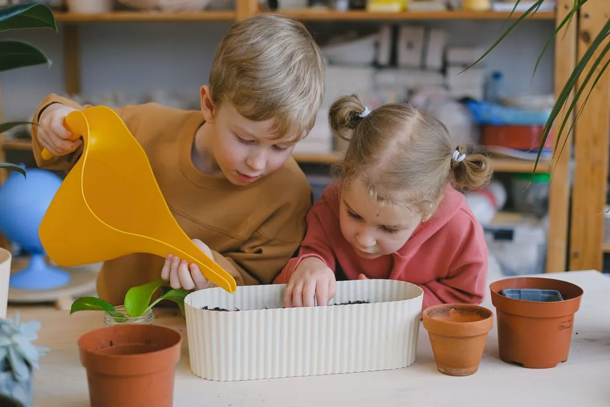

- When
- Saturday mornings
- Who it's for
- Ages 4 to 11
180children in the garden club
What happens
Mud, worms, wheelbarrows and a lot of laughing. Children plant their own beds, meet the hens, make bug hotels and eat a snack they picked themselves.
Who it is for
Children aged 4 to 11, with a grown-up for the youngest. Sessions are free for families on low incomes.
What you take home
Muddy knees, a pot of something growing and a child who suddenly wants to eat salad.